上篇 · 结论总结
对比口径：7/20 前 = 06/01–07/19 共 7 个完整周；7/20 后 = 07/20–08/09 共 3 个完整周。图中红色虚线为 7/20。日均对照：前 49 天日均金额 456 → 后 21 天日均 581（+27%）。
① 整体：有没有涨？新老各自怎样？
| 指标 | 7/20 前周均 | 7/20 后周均 | 变化 |
|---|---|---|---|
| 付费金额 | 3,191 | 4,064 | +27% |
| 新付费金额 | 1,049 | 1,596 | +52% |
| 老付费金额 | 2,142 | 2,468 | +15% |
| 新付费人数 | 13.7 | 24.0 | +75% |
结论：有上涨。新付费金额/人数涨幅大于老付费；老客仍贡献过半金额，但这次抬升里新客是更关键的加速器。峰值周 7/20–7/26 金额 4,807，其中新付费 1,955、老付费 2,852。
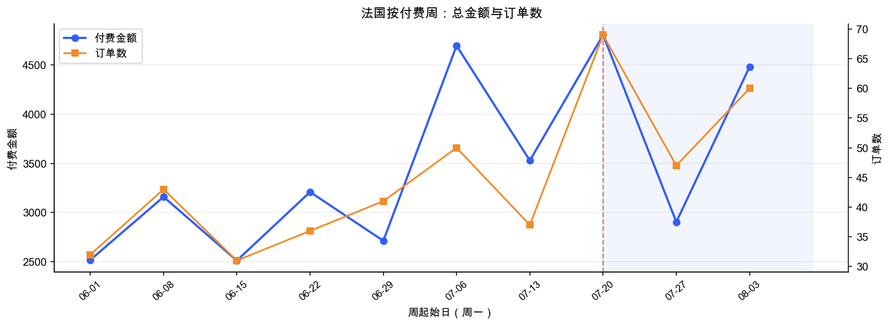
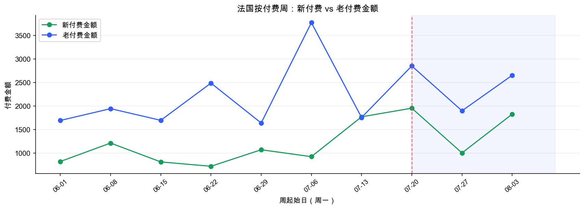
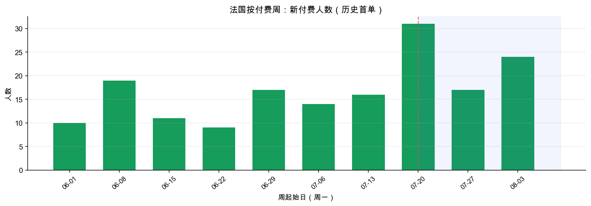
② 新注册闭环：注册与 7 天付费是否对得上？
7/20 当周注册从约 357/周跳到 762（Google 184、TikTok 81、utm空 496）。7 天付费率并未显著抬升（整体约 2% 上下波动），说明是量涨驱动，不是转化率突变。
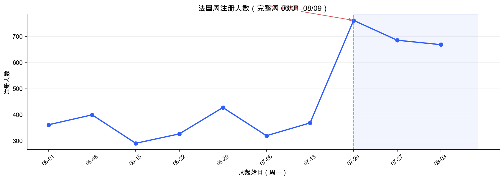
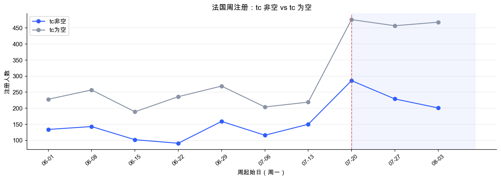
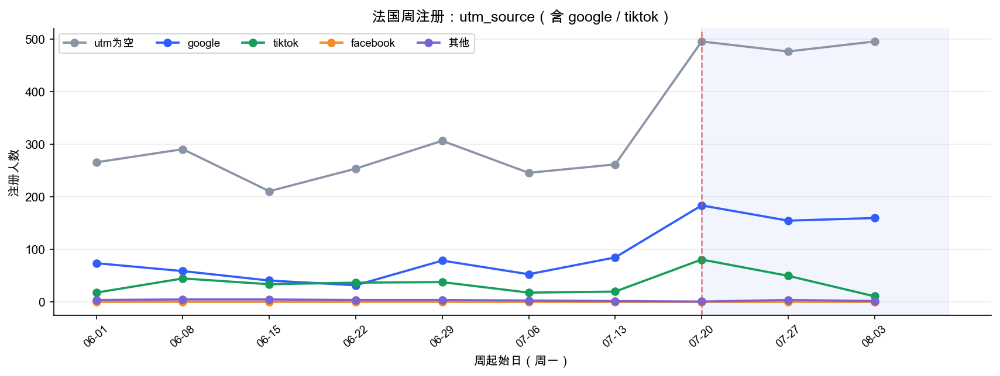
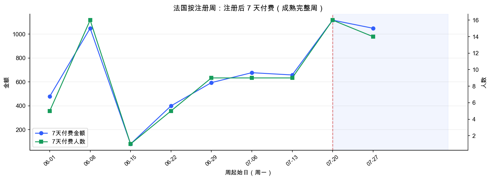
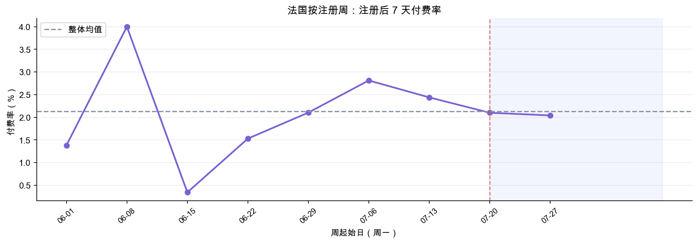
闭环：注册放量 → 7 天付费人数/金额随量上升（费率走平）→ 付费日新付费人数同步抬升。对得上。
③ google / tiktok 是否带动上涨？
| 归因分类 | 7/20前周均金额 | 7/20后周均金额 | 增量 | 占总增量份额 |
|---|---|---|---|---|
| ①google | 246 | 601 | +355 | 41% |
| ②tiktok | 0 | 30 | +30 | 3% |
| ④tc非空且utm空 | 930 | 1,262 | +332 | 38% |
| ⑤tc为空 | 2,015 | 2,171 | +156 | 18% |
Google：周均归因金额 246→601（+144%），是相对涨幅最大的付费来源；峰值周 Google 归因达 711。
TikTok：注册周均 30→47，但付费贡献极弱（后段周均仅 30），7 天付费率接近 0。TikTok 不是这次收入上涨的主因。
⑤ tc为空 / ④ utm空：绝对值仍最大，有抬升，但相对涨幅远小于 Google。需注意 utm 空可能混有归因缺失，不宜全当成自然量。
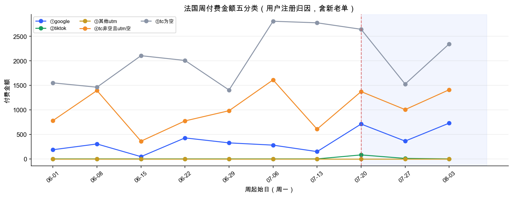
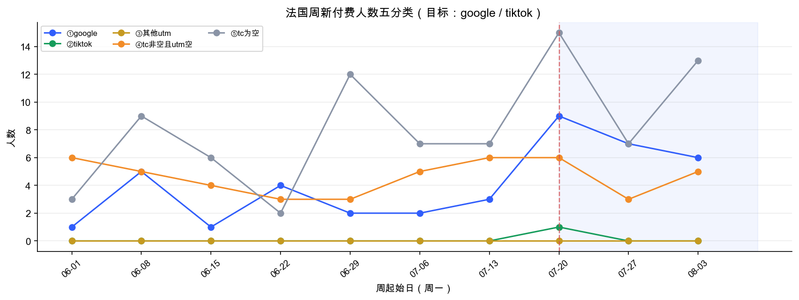
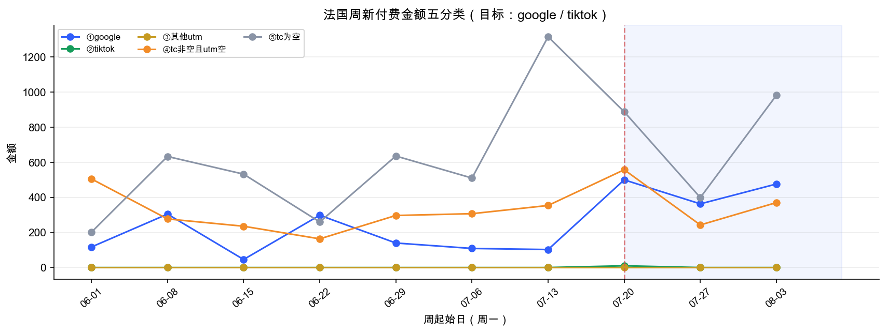
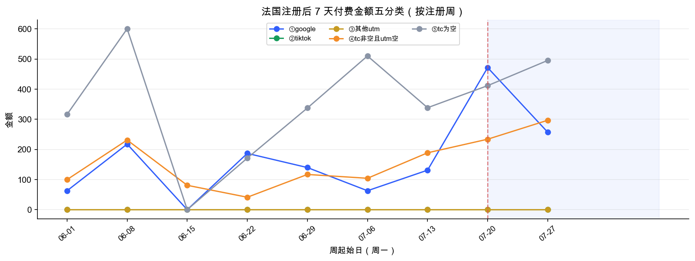
原因判断（直接回答核心问题）
- 直接触发：7/20 起法国注册显著放量（当周 762，约为前期周均的 2 倍+）。
- 收入结构：新付费人数与金额同步抬升，是上涨的主要加速器；老客金额也升高，放大了峰值周。
- 渠道贡献：Google 归因付费增幅最大，是可明确归因的增长引擎；TikTok 有注册放量但几乎无付费转化。
- 不是转化率故事：注册后 7 天付费率没有系统性抬升，质量信号偏「量增」而非「质跃」。
下篇 · 详细数据
完整周数据表
| 周区间 | 注册 | TikTok | 付费金额 | 新付费人数 | 新付费金额 | 老付费金额 | 7天付费率 | |
|---|---|---|---|---|---|---|---|---|
| 06/01–06/07 | 362 | 74 | 18 | 2,518 | 10 | 823 | 1,694 | 1.38% |
| 06/08–06/14 | 400 | 59 | 45 | 3,160 | 19 | 1,215 | 1,945 | 4.00% |
| 06/15–06/21 | 291 | 41 | 34 | 2,511 | 11 | 814 | 1,697 | 0.34% |
| 06/22–06/28 | 327 | 32 | 37 | 3,209 | 9 | 721 | 2,488 | 1.53% |
| 06/29–07/05 | 428 | 79 | 38 | 2,713 | 17 | 1,072 | 1,640 | 2.10% |
| 07/06–07/12 | 320 | 53 | 18 | 4,697 | 14 | 926 | 3,772 | 2.81% |
| 07/13–07/19 | 369 | 85 | 20 | 3,529 | 16 | 1,772 | 1,757 | 2.44% |
| 07/20–07/26 | 762 | 184 | 81 | 4,807 | 31 | 1,955 | 2,852 | 2.10% |
| 07/27–08/02 | 686 | 155 | 50 | 2,904 | 17 | 1,004 | 1,899 | 2.04% |
| 08/03–08/09 | 669 | 160 | 11 | 4,483 | 24 | 1,829 | 2,654 | — |
橙色高亮行为峰值周 7/20–7/26。
口径与限制
- 完整自然周：20260601–20260809 共 10 周（6/1 恰为周一，8/3 周截至 8/9）。
- 付费日 vs 注册日 7 天付费严格分开；历史首单基于全历史净付费订单。
- 7 天窗口成熟注册截至 20260803；末周仅部分成熟，7 天付费率表中末周标为 —。
- 渠道五分类：①google ②tiktok ③其他utm ④tc非空且utm空 ⑤tc为空。
- 未结合广告消耗；若要验证 Google 是否加投，需对照后台 spend。
最终回答
7/20 后法国收入为什么涨？因为注册放量（尤其 Google 与大量 utm 空流量）带来更多新付费，同时老客金额抬升放大峰值；TikTok 放量但几乎不贡献付费。最明显上涨周是 7/20–7/26。